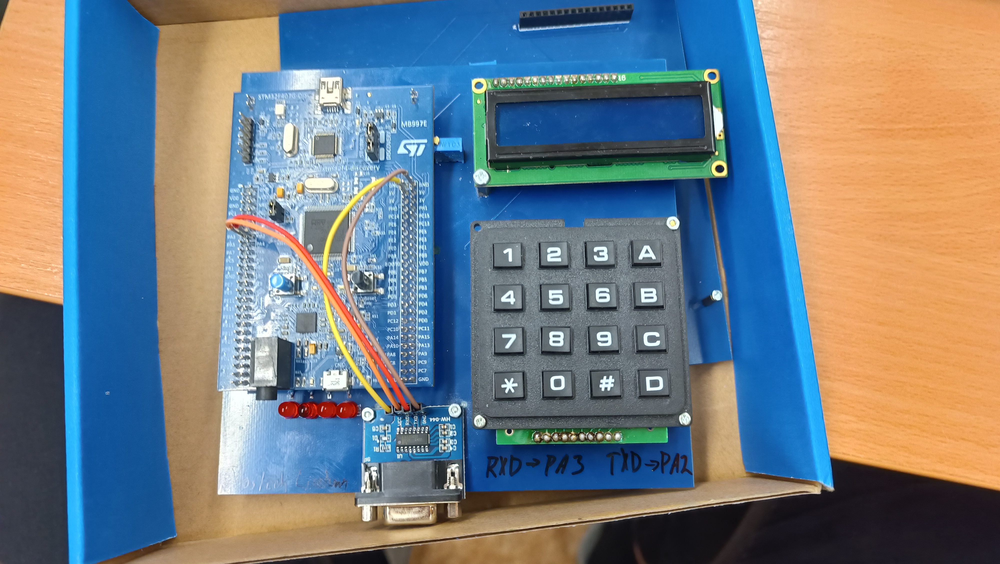

Moje projekty v rámci 1. semetru
Níže najdete projekty, které mám za úkol zpracovat v 1. semestru.
Vytvoření osobní webové stránky pomocí HTML, CSS, javascrptu atd. Stránka obsahuje informace o mně, mé projekty a kontaktní údaje. Tento projekt je z přemětu ZIT(Základy informatiky)
V předmětu UPR(Úvod do programovaní) mám za úkol naprogramovat v jazyce C hru PAC-MAN nebo jednoduchý photoshop, a to za použití knihovny SDL.
V přemětu ZDS(Zýáklady digitálních systémů) máme dva projekty v průběhu semestru, a oba dva se týkají zapojení booleovských funkcí a jejich minimalizace.
Projekty mimo školu
Funkci řídící jednotky zastává EPS32, která čte data skrz MODBUS protokol z teplotních čidel na bojleru,
solárních kolektorech. Na základě teplot chytře řídí čerpadlo tak, aby se co nejefektivněji využívala energie.
Zároveň ESP přeposílá data přes MQTT cloud do aplikace Virtuino na mobilním telefonu, kde jsou zpracována a zobrazována. Z aplikace je také možnost měnit základní parametry řídící jednotky.
Tato deska slouží k propojení mikrokontroléru STM32F407 s různými periferiemi, jako jsou senzory, displeje a komunikační moduly. Tato deska vznikla za účelem usnadnění přenosu školního výukového kitu ze střední školy. Z časových důvodů vznikl pouze první prototyp. Ale byl funkční a splnil svůj účel, sic nebyl dokonalý.
